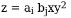

Основная часть страницы
Основной текст страницы может содержать абзацы.
В абзацах может быть жирный шрифт, может быть курсивный шрифт, а может быть и жирный и курсивный шрифт.
Можно даже попытаться изобразить подобие математических формул: 
Если текст не нравится, его можно перечеркнуть.
В текст можно вставить картинку:
Умные мысли лучше всего показывать в виде списков:
- Первая умная мысль
- Вторая умная мысль
- Третья умная мысль
- Пятая умная мысль (т.к. четвертую лучше никому не показывать)
Пользователя можно попросить заполнить форму
Имя:
Фамилия:
Отчество:
Пол:
И отправить данные куда следует: